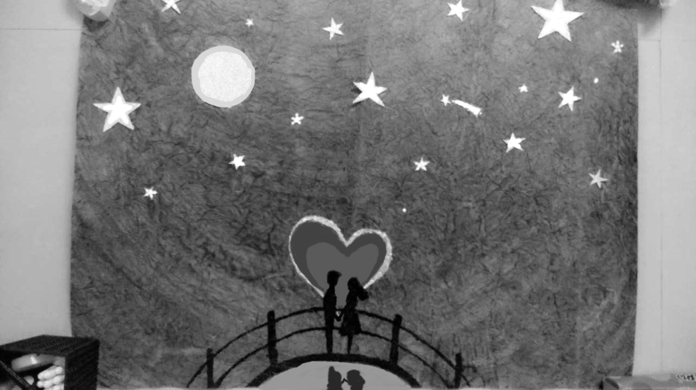
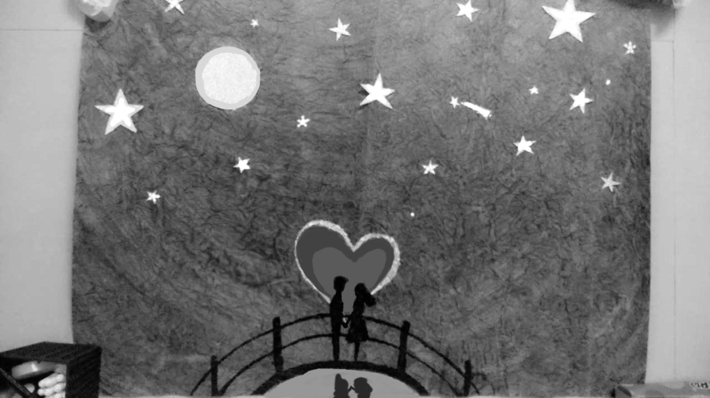

Creating Image
Let’s explore the anatomy of the representation of an image in Python and NumPy.
No matter the format, each pixel has a value, but the difference is in how the pixel is represented. For example, we can create a black square image from scratch by simply creating a 2D NumPy array:
img = numpy.zeros((3,3), dtype=numpy.uint8)
If we print this image to a console, we obtain the following result:
array([
[0, 0, 0],
[0, 0, 0],
[0, 0, 0]], dtype=uint8)
Each pixel is represented by a single 8-bit integer, which means that the values for each pixel are in the 0-255 range.
Let’s now convert this image into Blue-green-red (BGR) using cv2.cvtColor:
img = cv2.cvtColor(img, cv2.COLOR_GRAY2BGR) # Convert array of image to Gray
Let’s observe how the image has changed:
array([[[0, 0, 0],
[0, 0, 0],
[0, 0, 0]],
[[0, 0, 0],
[0, 0, 0],
[0, 0, 0]],
[[0, 0, 0],
[0, 0, 0],
[0, 0, 0]]], dtype=uint8)
As you can see, each pixel is now represented by a three-element array, with each integer representing the B, G, and R channels, respectively. Other color spaces, such as HSV, will be represented in the same way, albeit with different value ranges (for example, the hue value of the HSV color space has a range of 0-180) and different numbers of channels.
You can check the structure of an image by inspecting the shape property, which returns rows, columns, and the number of channels (if there is more than one).
Consider this example:
>>> img = numpy.zeros((3,3), dtype=numpy.uint8)
>>> img.shape
The preceding code will print (3,3). If you then converted the image to BGR, the shape would be (3,3,3), which indicates the presence of three channels per pixel
Reading and Writing Image
OpenCV provides the imread() and imwrite() functions that support various file formats for still images. The supported formats vary by system but should always include the BMP format. Typically, PNG, JPEG, and TIFF should be among the supported formats too.
Images can be loaded from one file format and saved to another. For example, let’s convert an image from PNG to JPEG:
import cv2 # Load Opencv library
image = cv2.imread('MyPic.png') # Read Image MyPic.png
cv2.imwrite('MyPic.jpg', image) # Convert and Write Image to MyPic.jpg
By default, imread() returns an image in the BGR color format even if the file uses a grayscale format. BGR represents the same color space as red-green-blue (RGB), but the byte order is reversed.
Optionally, we may specify the mode of imread() to be one of the following enumerators:
- IMREAD_ANYCOLOR = 4
- IMREAD_ANYDEPTH = 2
- IMREAD_COLOR = 1
- IMREAD_GRAYSCALE = 0
- IMREAD_LOAD_GDAL = 8
- IMREAD_UNCHANGED = -1
For example, let’s load a JPG file as a grayscale image (losing any color information in the process), and then, save it as a grayscale JPG image:
iimport cv2 # Load Opencv library
igrayImage = cv2.imread('MyPic.jpg', cv2.IMREAD_GRAYSCALE) # Read Image MyPic.png as Gray Image
icv2.imwrite('MyPicGray.jpg', grayImage) # Write Image MyPic.png as Gray Image
Output should look like this :
 

To avoid unnecessary headaches, use absolute paths to your images (for example, /home/ratan/pictures/MyPic.jpg) at least while you’re familiarizing yourself with OpenCV’s API.
Regardless of the mode, imread() discards any alpha channel (transparency). The imwrite() function requires an image to be in the BGR or grayscale format with a certain number of bits per channel that the output format can support. For example, bmp requires 8 bits per channel, while PNG allows either 8 or 16 bits per channel.
Displaying Images
Use the function cv2.imshow() to display an image in a window. The window automatically fits to the image size.
First argument is a window name which is a string. second argument is our image. You can create as many windows as you wish, but with different window names.
import cv2 # Load Opencv library
iimage = cv2.imread('MyPic.jpg') # Read Image MyPic.jpg
icv2.imshow('My Picture',image) # Display image
icv2.waitKey(0) # Wait for a key press to go next line
icv2.destroyAllWindows() # Closes image window